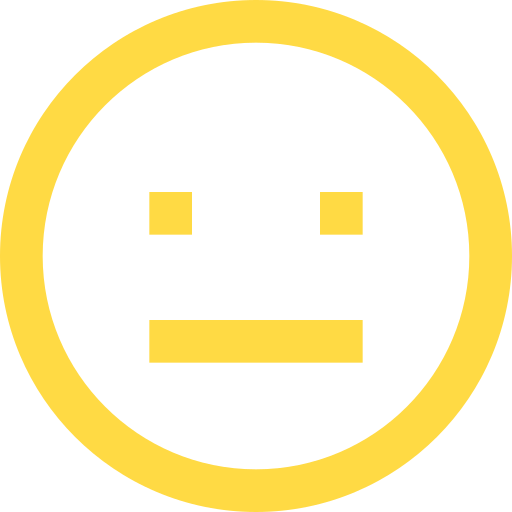
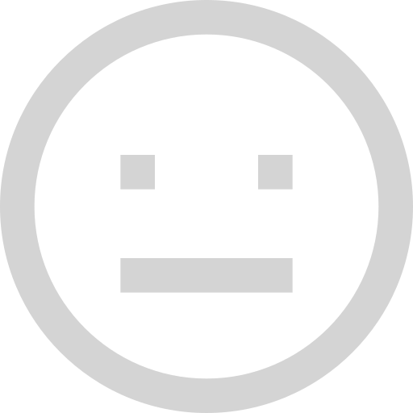

<!-- <ion-header>
      <ion-navbar>
        <ion-title>
          Today's Mood
        </ion-title>
      </ion-navbar>
    </ion-header> -->

    <ion-content class="bck" padding>


    <div no-lines class="status">
      <span id="highlight">Mood</span>
      <span >--></span>
      <span>Highlights</span>
      <span>--></span>
      <span>Done!</span>
    </div>


    <h1>How do you feel today?</h1>


          <button class="moodbutton" ion-button clear icon-only (click)="saveMood('sad')">
          	<!-- colored icon, only shows when today's mood is not recorded yet or when today's mood is recorded as sad -->
            
          	<!-- colored icon, only shows when today's mood is recorded and is not recorded as sad  -->
            
          </button>

          <!-- same logic as the first button -->
          <button class="moodbutton" ion-button clear icon-only  (click)="saveMood('meh')" >        	
            
            
          </button>

          <!-- same logic as the first button -->
          <button class="moodbutton" ion-button clear icon-only (click)="saveMood('smile')">
            
            
          </button>
      
 
          <button class="nav-button back" ion-button icon-start (click)="goToHome()">
            <ion-icon name="arrow-back">
            
           </ion-icon>Back</button>
          <button class="nav-button next"ion-button icon-end (click)="goToHighlightList()">Next
           <ion-icon name="arrow-forward"></ion-icon></button>


      


    
    </ion-content>
